At H2O.ai, we believe that every company can and should be an AI company. This concept is fundamental for the future of every business and organization today. As you embark on this AI journey to make your own AI, we would like you to explore the key considerations and the technology that will make your own AI a possibility.
To make your own AI with an automated machine learning platform, the platform needs to be open and extensible. An open and extensible platform allows data scientists to influence the automatic machine learning optimization process and for the process to consider additional feature engineering, scorers metrics, and modeling algorithms. Data scientists can add their insights, customizations, and domain expertise to build the most accurate models for each use case. Driverless AI uses the concept of recipes to optimize the machine learning process, and with Driverless AI 1.7.0 and later versions, users can add and develop custom recipes.
This self-paced course will cover what a recipe is, the different types of recipes available, and how to upload existing recipes to Driverless AI through the URL option. The three types of custom recipes that we will cover are transformer, scorer, and model.
You will need the following to be able to do this self-paced course:
- Basic knowledge of Machine Learning and Statistics
- A Driverless AI environment that is version 1.7.0 or newer
- Basic knowledge of Driverless AI or doing the Automatic Machine Learning Introduction with Driverless AI
- A Two-Hour Test Drive session : Test Drive is H2O.ai's Driverless AI on the AWS Cloud. No need to download software. Explore all the features and benefits of the H2O Automatic Learning Platform.
- Need a Two-Hour Test Drive session? Follow the instructions on this quick self-paced course to get a Test Drive session started.
- Need a Two-Hour Test Drive session? Follow the instructions on this quick self-paced course to get a Test Drive session started.
Note: Aquarium's Driverless AI Test Drive lab has a license key built-in, so you don't need to request one to use it. Each Driverless AI Test Drive instance will be available to you for two hours, after which it will terminate. No work will be saved. If you need more time to further explore Driverless AI, you can always launch another Test Drive instance or reach out to our sales team via the contact us form.
H2O Driverless AI is an artificial intelligence (AI) platform for automatic machine learning. Driverless AI automates some of the most tedious and challenging data science and machine learning tasks such as feature engineering, algorithm selection, model validation, model tuning, model selection, model explanation, model documentation, and model deployment. It aims to achieve the highest predictive accuracy, comparable to expert data scientists, but in a much shorter time thanks to end-to-end automation. Driverless AI's current scope does not include extensive data manipulation or augmentation before starting an experiment; hence, most of the data preparation needs to be done before loading the data.
Driverless AI uses an experiment to learn from your data and build an end-to-end scoring pipeline for productionalizing a model. The experiment process and the final pipeline are made up of building blocks or recipes. These recipes are Python code snippets. Recipes have the following types: ML algorithms, feature engineering (transformers), scorers, and data. In Driverless AI 1.7.0, we added support for BYOR (Bring Your Own Recipe). With BYOR, you can use your own recipes in combination with or instead of all built-in recipes. This allows you to further influence the Driverless AI Automatic ML pipeline in addition to out-of-the-box control over the optimization choices that Driverless AI makes.
Recipes can be uploaded into Driverless AI at runtime without restarting the platform, just like a plugin. Data scientists at H2O have created and curated approximately 150 open-source recipes that can be used as-is or as templates and can also be expanded.
Existing recipes include templates for:
- Transformers
- Scorers
- Models
- Data
In the self-paced course's remaining tasks, we will be describing the various types of templates and how to use them. Please note that we will cover the Data recipes in another self-paced course.
How do recipes work in Driverless AI?
During the training of a supervised machine learning modeling pipeline, Driverless AI can use the custom recipes or code snippets as building blocks, independent or in combination with all built-in recipes that come with Driverless AI. The custom recipes act the same as if they were written by H2O.ai. It's the same python template and backend, so there is no performance penalty.
Below is a diagram of how recipes work in Driverless AI and how the Automatic Model Optimization process is extended:

The image below is a deeper dive into the BYOR architecture for a multi-class problem:

The diagram above focuses on the parts of Driverless AI that are relevant to the BYOR architecture. The diagram is the architecture representing a multi-class problem. Binary classification and regression problems are also supported. Please note that Automatic Visualization and Machine Learning Interpretability are not covered in this diagram.
What is the role of recipes in ML?
BYOR allows Data Scientists to bring their own recipes or leverage the existing, open-source recipes to manipulate, augment, and optimize their data. In this way, the expertise of those creating and using the recipes is leveraged to focus on domain-specific functions to build customizations.
Where can you find the H2O open-source recipes?
The curated open-source recipes currently reside in the following GitHub repository:
H2O Curated Recipes GitHub Repo
Deeper Dive and Resources
Explore the recipe Library and recipe recommendations
Best Practices for Recipes:
About the Dataset
This self-paced course will use the customer churn telco dataset from Kaggle. The dataset has information about customers of a telecommunications company. Some of the features included are customer demographic location, length of the account, and customer call history. We will be predicting customer churn.
This dataset set has 3333 customers(rows) and 21 columns representing each customer's telephone plan's attributes.
Add the Data
1. To add the dataset for this self-paced course, please follow the following steps:
a. Click on + Add Dataset (or Drag and Drop)
b. Select FILE SYSTEM

c. Enter the following /data/Splunk/churn into the search bar.
d. Select churn.csv
e. Click to Import Selection
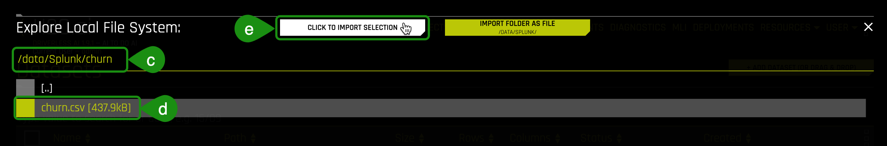
2. If the file loaded successfully, then you should see an image similar to the one below:
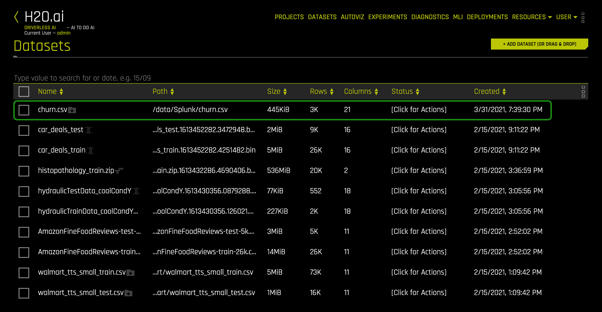
Note: you can ignore the other datasets as they are used in other self-paced courses.
3. Let's take a quick look at the columns of the churn dataset. Click on the churn.csv dataset, and click on Details. A similar page should appear:
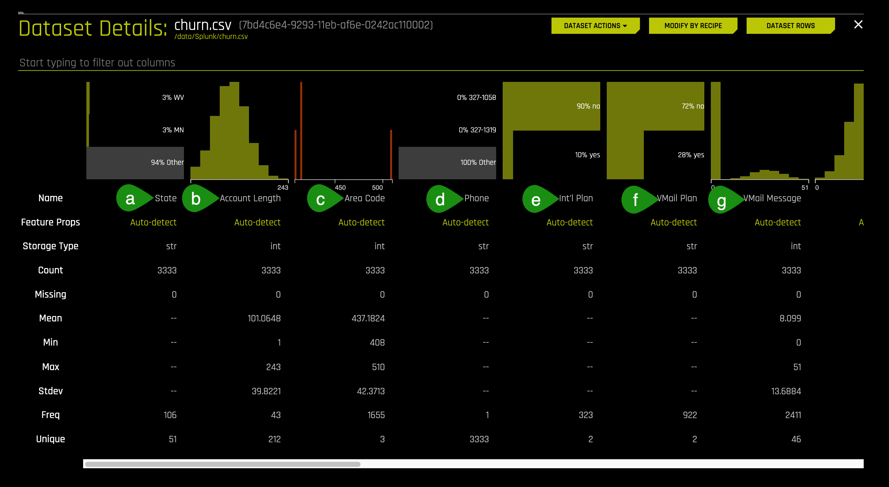
- Things to Note:
a. State
b. Account Length - in days
c. Area Code
d. Phone - Phone Number
e. Int'l Plan - International Plan
f. VMail Plan - Voicemail Plan
g. VMail Messages - Number of voicemail Messages
4. Continue scrolling the current page if you want to see more columns (image is not included).
5. Return to the Datasets Page.
Launch Experiment
1. On the Datasets page click on the churn.csv dataset and select Predict:

2. Select Not Now on the First time Driverless AI box message. A similar image should appear:

3. Select Target Column, then select Churn?

4. Name your experiment Exp 1 - Baseline and verify that the experiment looks similar to the one below, then select Launch Experiment:
Note: You might have to update the default settings to the ones shown below.
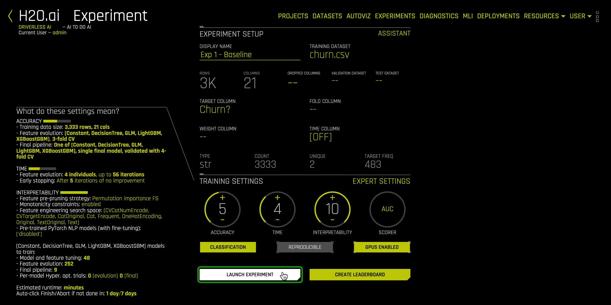
5. Once the experiment is completed, a similar page will appear with experiment results:
Experiment 1 Results:

Experiment 1 - ROC Accuracy

Things to Note:
Under summary: The validation score is 0.9113 with the best accuracy of 0.9310 (click on ROC, then hover over Best ACC)
Variable Importance: The top variable that led to a customer churning according to this model was "Day Charge." The other variable of most importance was "CustServ Calls." Intuitively this makes sense because if a customer is overpaying for calls in the morning when they might be the most active and constantly calling Customer Service, it could have led to a dissatisfied customer.
Deeper Dive and Resources
In Task 2, we ran an experiment to build a model that would predict customer churn. The Driverless AI model generated in task 2 gave us the results below:
Summary of results:
- | Experiment 1 (Base) |
Experiment Settings | 5-4-10 |
Scorer | AUC |
Model | LIGHTGBM |
Feature Importance | Day Charge, CustServ Calls, and Eve Charge |
AUC Score | 0.9113 |
Accuracy | 0.9310 |
When a dataset is selected for an experiment, Driverless AI optimizes its settings by selecting the best Scorer, Model(s), and Transformers for the dataset. However, this does not mean we cannot import other scorers, models, or transformers to see if we can further optimize our model. In this task, we will be importing a transformer recipe to see how the features in the feature engineering change.
Now we will import a recipe to add together related numeric features such as day minutes, evening minutes, and night minutes. Driverless AI doesn't add three or more columns automatically, so we will add a recipe that will do this for us. We will see if this new feature ends up in the top features used by our final Driverless AI model.
Import a Transformer Recipe
The goal of importing the new transformer recipe is to see if we can further optimize our baseline model. To do this, we are going to take our baseline experiment and import the sum.py transformer
1. Select Experiments located at the top of the Experiment page:

2. Hover over Exp 1 - Baseline, then click on the three stacked small boxes located on the right side of Exp 1 - Baseline and select New Experiment with Same Settings; this will create a new experiment with the same parameters that you used for Exp 1 - Baseline:
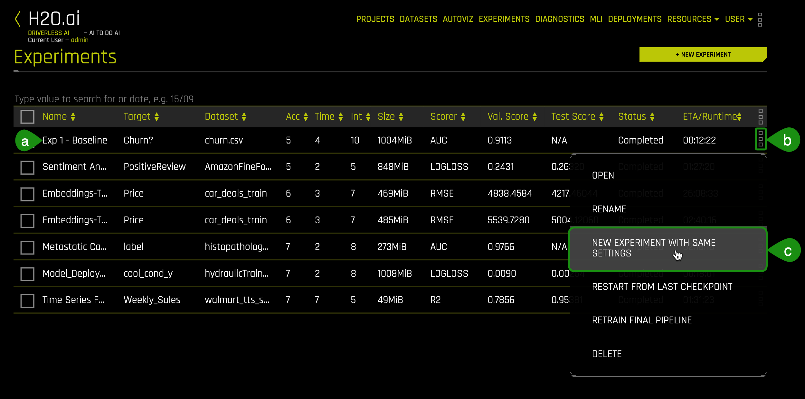
3. Select Not Now on the First Time Using Driverless AI Tour.
4. Name your experiment Exp 2 - Transformer and select Expert Settings:

5. Click on +Load Custom Recipe From URL:

6. Copy and paste the following URL for the SumTransformer into the Load Custom Recipe box then click on Save.
https://github.com/h2oai/driverlessai-recipes/blob/rel-1.9.1/transformers/numeric/sum.py
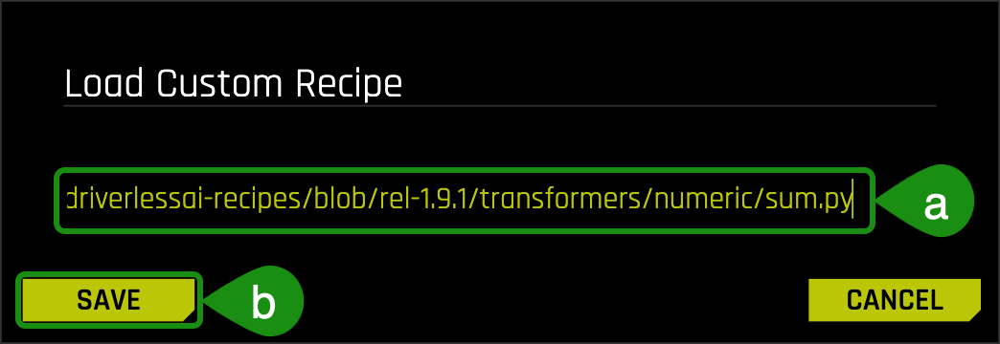
7. There will be a message updating you on the status of loading the recipe; then, the Expert Experiment Settings page will re-appear.
8. On the Expert Experiment Settings find Recipes and click on it:
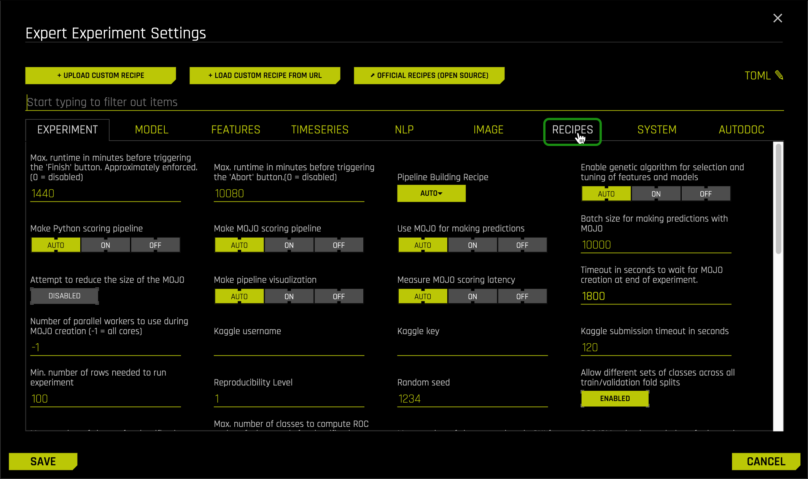
9. Click on Select Values under Include Specific Transformer. We will verify that the transformer we loaded did indeed load.

10. Type SumTransformer on the search bar. If the Transformer was loaded correctly, then it will appear as shown below, highlighted, meaning that Driverless AI will use it. Make sure your SumTransformer is checked, and click Done:
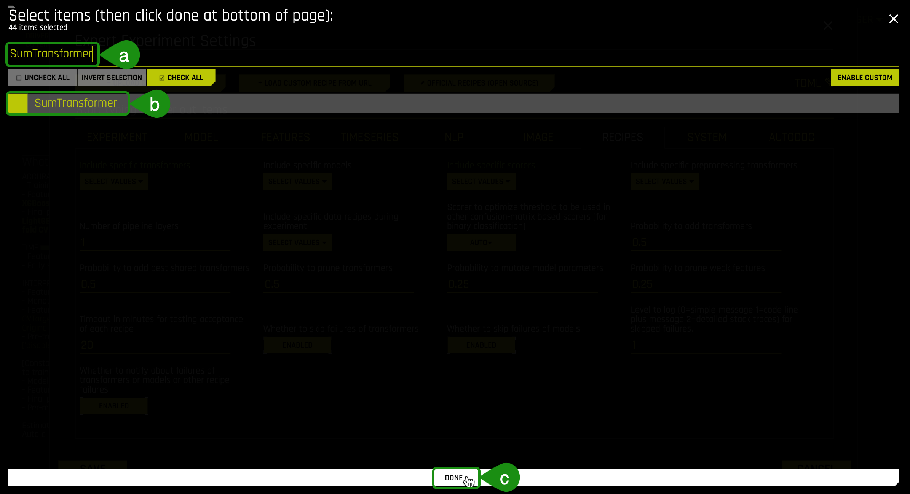
11. Select Save on the Expert Experiment Settings page.
12. Verify that the transformer is in the experiment; on the Experiments page, look under "What do these settings mean?" > "Interpretability," and you should see the custom transformer as Sum. Once you are ready, Select Launch Experiment:

13. When the experiment is completed, you will see a similar summary page:

Note: In Variable Importance: You might see a few features starting with "SUM;" those are the features from the custom transformer. In our case, we got one feature starting with "SUM."
As you can see, the AUC slightly improved, and Driverless AI recognized the interaction among several features and added them together by using our custom transformer. Though sometimes, Driverless AI uses the transformer, it depends on the Data sampling it uses when running the experiment. If you want to see how the recipe will improve the AUC, you can go back to recipes and only select the transformer. We will further discuss the results at the end of task 6.
Deeper Dive and Resources
In this task, we will be importing a Scorer recipe to optimize the modeling process for a metric that may be more important to our business than a standard statistical scorer.
Import a Scorer Recipe
The model recipe used for this experiment is the Brier Loss Scorer; to learn more about the Brier Loss model, see the Deeper Dive and Resources at the end of this task.
1. Select Experiments located at the top of the Experiment page.
2. Hover over Exp 1 - Baseline, then click on the three stacked small boxes located on the right side of Exp 1 - Baseline, and select New Experiment with Same Settings; this will create a new experiment with the same parameters that you used for Exp 1 - Baseline:
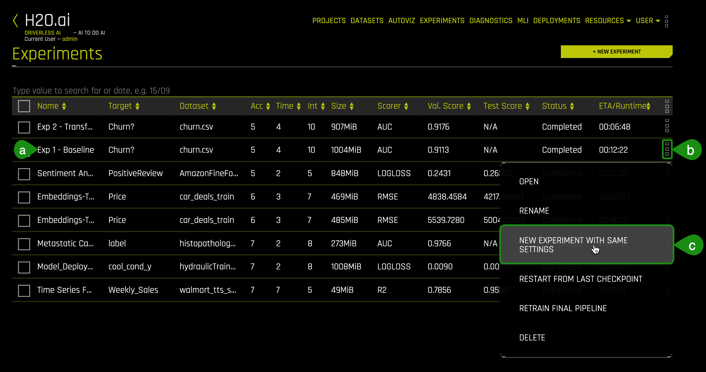
3. Name your experiment Exp 3 - Scorer, and select Expert Settings:

4. Click on +Load Custom Recipe From URL:
5. Copy and paste the following URL for the Custom Brier Loss recipe into the Load Custom Recipe box then click on Save.
https://github.com/h2oai/driverlessai-recipes/blob/rel-1.9.1/scorers/classification/binary/brier_loss.py

6. There will be a message updating you on the status of loading the recipe; then the Expert Experiment Settings page will re-appear.
7. On the Expert Experiment Settings find Recipes, and click on it:
8. Click on Select Value under Include Specific Scorers; we are going to verify that the scorer we loaded did indeed load:

9. On the list of Scores that comes up look, for BRIER, if the Scorer loaded correctly, then it will appear as shown below, highlighted meaning that Driverless AI will use it:

10. Select Save on the Expert Experiment Settings page.
11. Once back on the Experiment page, click on the Scorer setting, which has an AUC as seen on the image below:

12. Select the Brier Scorer by clicking on it:

13. Your experiment page should look similar to the one below with Brier as your new scorer. Since we selected to create a new experiment from the baseline experiment, this experiment does not have the transformer we loaded on task 2. Once you have verified the settings, click on Launch Experiment:

14. When the Experiment is completed, you will see a summary page similar to the one below:

Experiment 3 - ROC, Best Accuracy

The AUC for this experiment was 0.9060, and the best accuracy was 0.9286.
Deeper Dive and Resources
In this task, we will be importing a model recipe to see if this new custom model recipe will help improve our churn model.
Import a Model Recipe
The model recipe that we will use for this experiment is ExtraTrees, which is an extremely randomized tree (ExtraTrees) from sklearn. To learn more about the Extra Trees model, see the Deeper Dive and Resources at the end of this task.
1.Select Experiments located at the top of the Experiment page.
2. Hover over Exp 1 - Baseline, then click on the three stacked small boxes located on the right side of Exp 1 - Baseline, and select New Experiment with Same Settings; this will create a new experiment with the same parameters that you used for Exp 1 - Baseline:

3. Name your experiment Exp 4 - Model and Select Expert Settings.
4. Click on +Load Custom Recipe From URL.
5. Copy and paste the following URL into the Load Custom Recipe box, then click on Save:
https://github.com/h2oai/driverlessai-recipes/blob/rel-1.9.1/models/algorithms/extra_trees.py
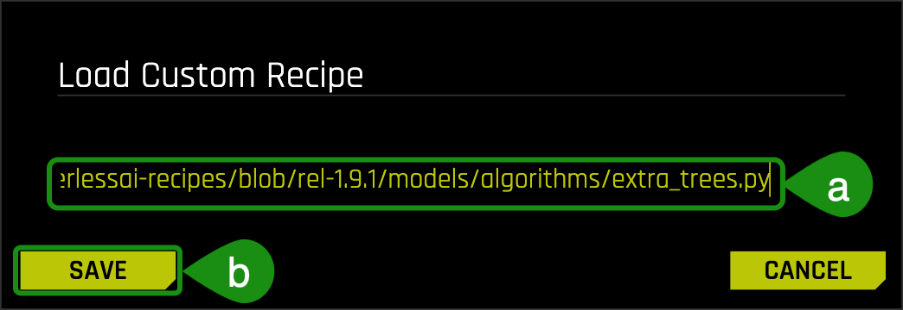
6. There will be a message updating you on the status of the recipe; then, the Expert Experiment Settings page will re-appear.
7. On the Expert Experiment Settings find Recipes and click on it.
8. Click on Select Value under Include Specific Model; we will verify that the custom model we loaded did indeed load then we will only select the ExtraTress model to run on our new experiment:

9. Click on Uncheck all, then select the ExtraTreess model and click Done:

10. Select Save on the Expert Experiment Settings page.
11. Verify that the custom model is included in the experiment on the Experiments page by looking under "What do these settings mean?", the settings have been updated to reflect the new ExtraTrees custom model. Once you have verified the settings, click on Launch Experiment:
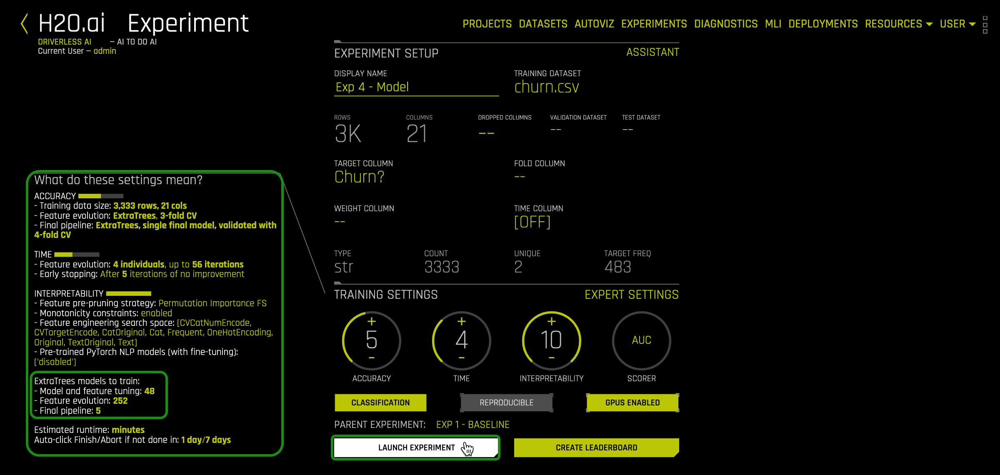
12. Once the Experiment is completed, you will see a summary page similar to the one below:

Experiment 3 - ROC, Best Accuracy

The AUC for this experiment was 0.9141, and the best accuracy was 0.9463.
Deeper Dive and Resources
So far, we ran four experiments, a baseline, and the baseline with three different types of recipes:
- Driverless AI Baseline Model
- Transformer
- Scorer
- Model
We will compare the results of all the experiments through the Projects feature, which allows us to compare the final models for each experiment.
1. Click on Projects:
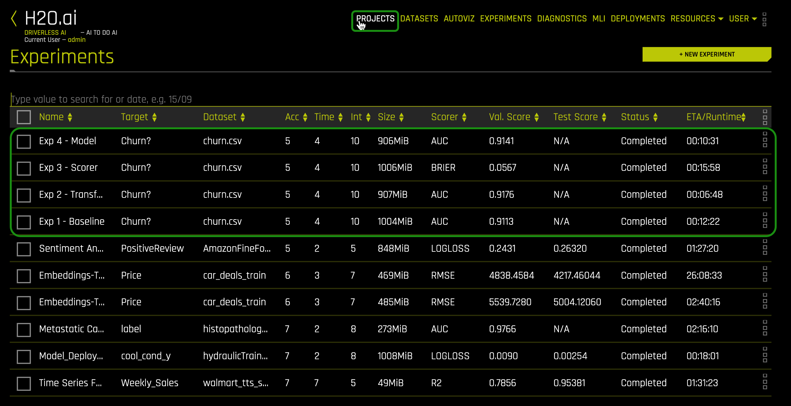
2. Select +New Project.
3. Enter the following under:
Name
Customer Churn Recipe Comparison
Description
Comparison of customer churn experiments using various recipes.
4. Select Create a New Project:
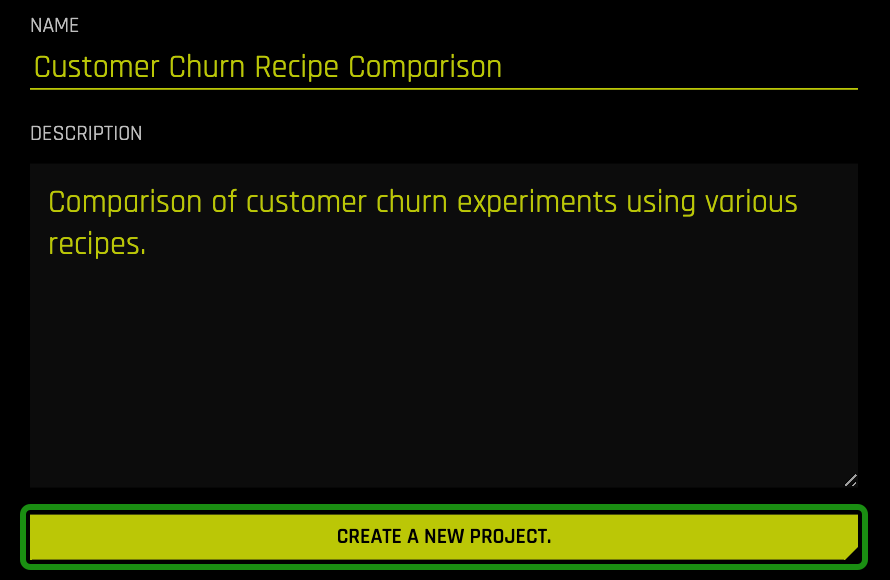
5. Click on +Link Experiment:

6. Select Exp 1 - Baseline by clicking on the Model:

7. Repeat step 6 for the remaining models (2, 3, and 4). The Project page should look similar to the one below:
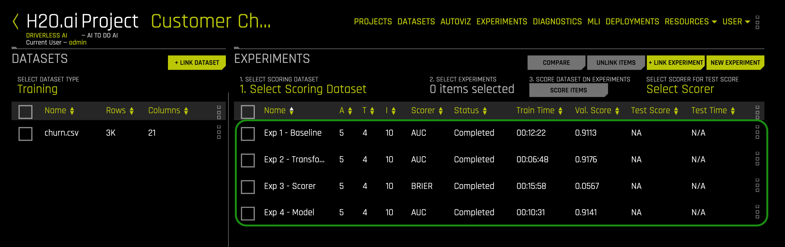
8. Select Exp 1, 2, and 4 to compare by clicking on the select box to the left of each model, and then on Compare 3 Items:

9. A similar page will appear with the three model results:
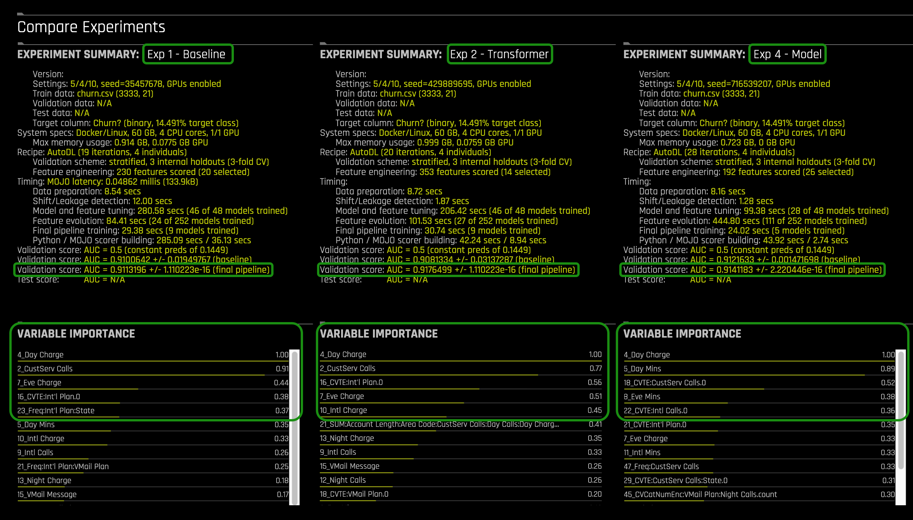
Confusion Matrices for each of the selected models:

From the confusion matrices shown above, we can understand how the models with the custom recipes improved. The Model recipe yielded a lower misclassification error of 5.43% than the baseline misclassification error, 7.56%.
- Formula: Misclassification (all incorrect / all) = (FP + FN) / (TP + TN + FP + FN)
- The misclassification percentage for the Model recipe is:
Misclassification = (71 + 110) / (2779 + 373 + 71 + 110)
Misclassification = 181 / 3,333 = 0.0543 = 5.43%
- The misclassification percentage for the Baseline is:
Misclassification = (145 + 103) / (380 + 2705 + 145 + 103)
Misclassification = 248 / 3,333 = 0.0744 = 7.44%
However, since we are working with a slightly imbalanced dataset, we need to take a closer look at the confusion matrices. We see that by using the custom recipes, the models started predicting more False labels correctly; in other words, we see more True Negatives; thus, we have a smaller misclassification error for the False class. On the other hand, we can see that the models with the recipes slightly underperformed when predicting the True class. For that reason, we see that the misclassification error for the True label is slightly better for the baseline. In this case, if we care more about the overall misclassification error, then we can see that the Model recipes are our best option. However, if we wanted to get better results for our True class, we will need to try to run another experiment while combining our different recipes.
ROC Curves for each model selected:

We can see that when we used the Transformer recipe, the model had better AUC with an accuracy of 0.9313 compared to Exp 1 - Baseline, which had an accuracy of 0.9310. In Exp 4 - Model, the AUC also improved, compared to the Baseline model, and had the best accuracy, 0.9463, compared to the other models. When looking at the variable importance, we see that all three experiments had "Day Charge" as the most important variable. In Exp 1 and 2, we see that "CustServ Calls" was the second most important variable, while for Exp 4, the second most important variable was "Day Mins." For Exp 2, the variable starting with "SUM" has a relative importance of 0.41; this value might not seem too high, but we can see that this variable is somewhat helping the model get a higher AUC than the other experiments.
Deeper Dive and Resources
H2O custom recipes reside in the H2O Driverless AI Recipes GitHub repo. There are multiple branches of Driverless AI recipes, so make sure that you are using the same branch as the Driverless AI version you have.
1. Open the link below on a separate tab. Make sure the branch is rel-1.9.1:
The rel-1.9.1 branch will be similar to the page below:

2. Recipes can be uploaded to Driverless AI by:
- Uploading custom recipes from your local machine
- Loading custom recipes from "URL" by copying and pasting the "URL", as shown in this self-paced course
- Go to the official recipes (external) repo and search for the recipe that you need and then copy the link to use in
+ Load Custom Recipe from URL

Uploading Recipes via URL
We are going to get the URL for the Brier Loss Scorer we used in Task 4 and upload it to Driverless AI.
1. Select the folder titled scorer:

2. Select the folder titled classification then the folder titled binary:

3. Click on the binary folder and then click the brier_loss.py file:

4. Copy the URL located at the top of the page:
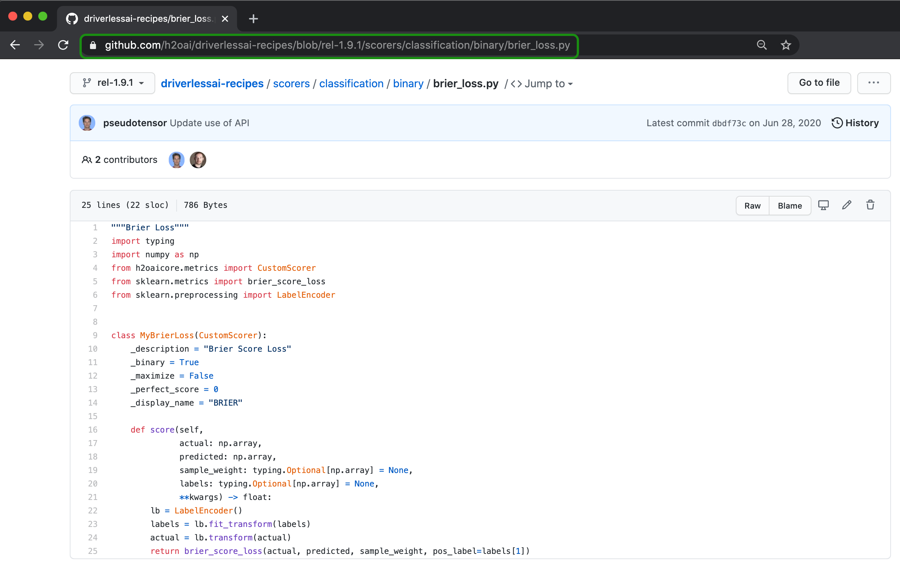
5. The URL for this version of the recipe should be the one below. This URL is then pasted into Driverless AI:
https://github.com/h2oai/driverlessai-recipes/blob/rel-1.9.1/scorers/classification/binary/brier_loss.py
6. See task 4 of this self-paced course to follow the process of uploading a recipe via the raw URL.
Uploading Recipes from Local Machine
For this self-paced course, we are using Driverless AI 1.9.1, so we will be working off the Driverless AI 1.9.1 branch.
1. Open the link below on a separate tab. Make sure the branch is rel-1.9.1:
2. Make sure it is Branch rel-1.9.1, then click on Clone or Download, then on Download ZIP. Doing so will download the entire rel-1.9.1 repo to your desktop. If you prefer not to download the entire repo, then use the URL method.

3. Unzip the driverless-recipes-rel-1.9.1 file and save it on your local machine.
4. On Driverless AI, start an Experiment, then select Expert Settings. Now instead of selecting +Load Custom Recipe From URL, you will select +Upload Custom Recipe:

5. After you click on Upload Custom Recipe, go to the directory where you saved the driverlessai-recipes-rel-1.9.1 folder.
6. Select the scorer folder:

7. Select the classification folder, then the binary folder:
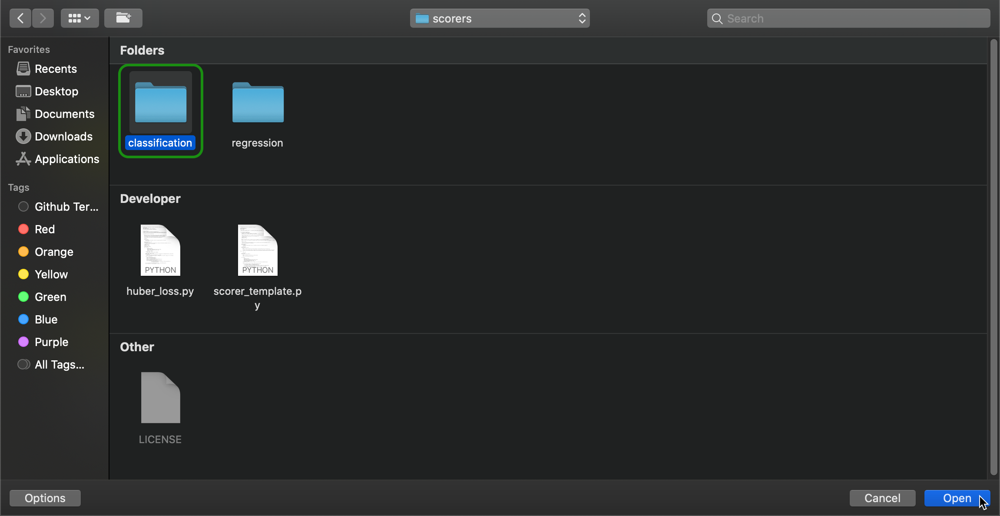
8. After, select the brier_loss.py file and then Open:

9. After doing this last step, you can continue with the rest of the steps on task 4 of this self-paced course.
Check out Driverless AI's next self-paced course: Build Your Own Custom Recipe
Where you will learn to build a:
- Custom Transformer Recipe
- Custom Scorer Recipe
- Custom Model Recipe
Webinar: Extending the H2O Driverless AI Platform with Your Recipes by H2O's Arno Candel
Blog: Custom Machine Learning Recipes: The ingredients for success by H2O's Parul Pandey
Catalog: Existing Open Source Custom Recipes